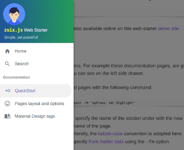
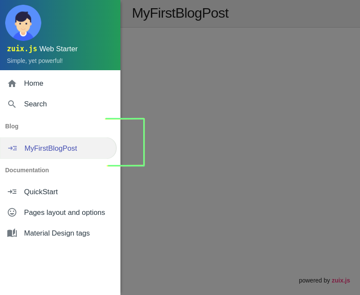

The only required knowledge to use this web-starter, is about basic use of the Shell and a simple text editor. If you have already some experience in programming, of course, a better choice would be a code editor or IDE.
Prerequisites
- Install Node.js version 12 or higher
- Install
zuix-cli, command-line tool:
npm install -g zuix-cli
Creating a new project
To create a new web-starter project enter the following command:
zx new my-webapp
the new project structure will be created in the folder my-webapp.
Change directory to the new project folder:
cd my-webapp
Starting development server
The development server will listen by default on port 8080 and serve files from the build folder ./docs. It will also watch for file changes in the ./source folder and build them as required, automatically refreshing the browser page.
zx start
Once started you can open the web browser and load the website using the access URLs given in the console output.
[Browsersync] Access URLs:
-----------------------------------
Local: http://localhost:8080
External: http://192.168.1.50:8080
-----------------------------------
[Browsersync] Serving files from: docs
[Browsersync] Watching files...
The main project folder is the ./source folder, where all website source files are located. In particular, the ./source/pages folder, contains all website pages that are implemented as text files that use Markdown syntax, and that will contain just the main content of the page. All other structural and layout parts of the page will be compiled automatically by the development server.
Managing content
Included with this web starter you will also find these documentation pages that can be removed by deleting the ./source/pages/docs folder. This can be done also using the zx CLI:
zx wipe-docs
The documentation is anyway available online on this web-starter demo site.
Adding a new page
Pages are organized into sections. For example these documentation pages, are grouped under the "Documentation" section, as shown on the left side drawer.

Sections and pages can be easily added with the following command:
zx add -s <section_name> -n <page_name> -fm "<field>: <value>"
Where the -s option is used to specify the name of the section under with the new page will be grouped, while the -n option is used to specify the name of the page. Both name must be file-name friendly, the kebab-case convention is adopted here. Optionally it's also possible to specify front matter data using the -fm option.
For example, the following code will add a new page in a section called "blog":
zx add -s blog -n my-first-blog-post -fm "options: mdl highlight"

The new page file will be ./source/pages/blog/my-first-blog-post/index.md, and the blog folder will be automatically created if it doesn't exist. The blog folder will also have an index.liquid file that just contains front matter data of the section, and that can be used to customize the title and the display order in the homepage.
Components
This web-starter is a component based web application that takes advantages of zuix.js library, a very versatile and fast library to create components.
The following components are used:
- Side Drawer with adaptive layout, that works both on mobile and desktop devices, supporting touch gestures
- Auto-hiding header, to allow a full immersive experience while reading pages on small screens
- Menu overlay, that can be used to quickly navigate within a page content, and that auto hides when the page is scrolled
- Scroll helper, used in some of the above components to handle page scroll events, and that can eventually
be used to "watch" elements position and trigger events as they become visible on screen - Gesture detector
- Material Design buttons, menu and cards, that can be also rendered using liquid tags
All the above components are part of zKit library, a library of components built with zuix.js.
To learn more about how to create and load components, see zuix.js website.
Files structure in brief
Template engine folders:
./source/_data # data folder
./source/_filters # filters
./source/_inc # includes and layouts
zuix.js components folders:
./source/app # user-defined components
./source/lib # copy of zKit components
Global asset files and folders:
./source/images
./source/js
./browserconfig.xml
./favico.ico
./humans.txt
./manifest.json
Site search index and SEO:
./source/search-index.json.njk # search-index builder script
./source/robots.njk
./source/sitemap.njk # sitemap generator script
Main pages:
./source/home.liquid # home page
./source/index.liquid # landing page
Content pages:
./source/pages
it's a good practice to have each content page implemented with its own folder and a index.md file in it. In the same folder can be placed other sub-folders for page-local assets, such as images.
./source/pages/travel/my-first-cruise/images/picture1.png
./source/pages/travel/my-first-cruise/index.md
./source/pages/travel/my-first-cruise/images/picture1.png
./source/pages/travel/my-first-cruise.md
./source/pages/travel/images/picture1.png
./source/pages/travel/my-first-cruise.md
same applies also if a different format is used for the index file that will then have a different extension (.liquid, .njk, .11ty.js, .html, ...).
The special sub-folder _inc can be used for page-local includes.
Building for production
The build process will read the default configuration of the web application, from the JSON file ./config/default.json.
This file contains, among the other options, the base url of the application that by default is /:
./config/default.json
{
"zuix": {
...
...
"app": {
"title": "My web application",
"baseUrl": "/",
...
}
}
}
Depending on the hosting service where the application will be published, the base url might not be the root of the website, like it happens for GitHub hosted pages, where the base url is the name of the project, unless custom domain is used:
https://<account_name>.github.io/<project_name>/
For this purpose, when building for production, a different configuration file is used with the proper base url set:
./config/production.json
{
"zuix": {
...
...
"app": {
"title": "My web application",
"baseUrl": "/my-web-app/",
...
}
}
}
also, the {{ app.baseUrl }} variable, if used in templates, will be replaced with the proper value depending on the selected configuration.
So, to select the production configuration when building the web application, the environment variable NODE_ENV must be set to production:
NODE_ENV=production zx build
it's also possible to simulate the production hosting when running the development server:
NODE_ENV=production zx start
in which case, the application will be served at the url specified by baseUrl in the production configuration file.